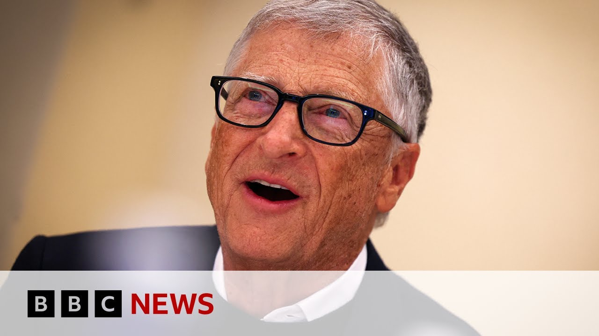

【比尔·盖茨将捐出2000亿美元的大部分财产给非洲 | BBC新闻】
Summary: Bill Gates plans to lobby the US government to restore funding for Gavi to prevent child deaths from vaccine-preventable diseases, while emphasizing aid's role in Africa's transition to self-sufficiency. He also discusses his investment in Cobalt Metals, an AI-driven mining company, and addresses concerns about profiting from conflict-affected regions.
摘要： 比尔·盖茨计划游说美国政府恢复对全球疫苗免疫联盟的资助，以预防儿童死于疫苗可预防的疾病，同时强调援助在非洲向自给自足过渡中的作用。他还讨论了对人工智能驱动的矿业公司Cobalt Metals的投资，并回应了有关在冲突地区获利的担忧。

⏱️ Estimated Reading Time: 9 min
📚 高考3500生词 📚 雅思生词 📚 托福生词 📚 GRE生词
Now, Microsoft founder and philanthropist Bill Gates says he plans to lobby the US government to reconsider terminating its financial support to the vaccine alliance gave.
微软创始人兼慈善家比尔·盖茨表示，他计划游说美国政府重新考虑终止对疫苗联盟的财政支持。
In an exclusive interview with Focus on Africa's Wigamara, Mr. Gates said he will be making a case to US President Donald Trump to restore funding to Gavi, which he says will prevent children from dying from vaccinereventable diseases.
在接受Focus on Africa的Wigamara独家采访时，盖茨表示他将向美国总统特朗普提出恢复对全球疫苗免疫联盟资助的理由，他认为这将防止儿童死于疫苗可预防的疾病。
Already the Africa CDC has said it has seen an increase in measles, menitis and yellow fever in African countries.
非洲疾病控制中心已经表示，非洲国家的麻疹、脑膜炎和黄热病病例有所增加。
Speaking to us at the African Union headquarters in the Ethiopian capital Adis Ababa, Mr. Gates said aid still plays a crucial or critical role as the region pivots towards self-reliance.
在埃塞俄比亚首都亚的斯亚贝巴的非洲联盟总部接受采访时，盖茨表示，在该地区转向自力更生的过程中，援助仍然发挥着关键作用。
within the next 20 years, most African countries will graduate to self-sufficiency for these very basic things.
在未来20年内，大多数非洲国家将逐步实现这些基本必需品的自给自足。
And so what we should care about is how does aid fit in to accelerate that?
因此，我们应该关注的是援助如何加速这一进程。
uh you know when you stop that baby from h getting HIV when you buy that bed net when you figure out what is malnutrition and so the baby's brain fully develops achieves its full potential you're accelerating that path uh for Africa to be largely middle-income countries to quote the outgoing Africa Development Bank president he said and I paraphrase that Africa's development will not come from aid it will come from investment-led growth.
你知道，当你阻止婴儿感染艾滋病毒、购买蚊帐、解决营养不良问题，使婴儿大脑充分发育并发挥其全部潜力时，你正在加速非洲成为中等收入国家的进程。引用即将离任的非洲开发银行行长的话，非洲的发展不会来自援助，而是来自投资驱动的增长。
Well, AIDS is a percentage of the economy won't be gigantic.
艾滋病在经济中的占比不会很大。
But if you believe that babies shouldn't be infected with HIV, uh, and aid is helping you with that, if you want all the world's science to help cure cickle cell disease, uh, and you know, that's not going to get organized except, you know, by aid that brings those scientific resources.
但如果你认为婴儿不应该感染艾滋病毒，而援助正在帮助你实现这一点，如果你希望全世界的科学帮助治愈镰状细胞病，你知道，只有通过援助才能组织这些科学资源。
aid plays a unique role and anybody who says aid versus something else, you know, that's a silly discussion.
援助发挥着独特的作用，任何将援助与其他事物对立起来的讨论都是愚蠢的。
There've been global aid cuts, but more specifically from the United States uh by the Trump administration.
全球援助有所削减，尤其是特朗普领导下的美国政府。
Do you think philanthropists like yourself can fill that gap?
你认为像你这样的慈善家能填补这一缺口吗？
Well, the numbers are are way too large for philanthropy to fill that gap.
慈善事业无法填补这一巨大缺口。
uh we're going to see uh a dramatic increase uh in children's deaths because we're not going to have uh those capacity.
我们将看到儿童死亡人数急剧增加，因为我们不具备这些能力。
Are you willing to use your considerable influence to possibly seek audience with President Trump again?
你愿意利用你的巨大影响力再次寻求与特朗普总统会面吗？
Maybe ask him to consider a more gradual pull out from some of these programs, Gabby with vaccinations for example.
也许请他考虑更逐步地退出某些项目，比如疫苗接种。
No, I'll make a strong case uh that the US should stay involved in in gabi, that it should be a leader on helping with uh polio eradication.
不，我会强烈主张美国应继续参与全球疫苗免疫联盟，并成为帮助根除脊髓灰质炎的领导者。
Uh that these HIV programs uh some efficiencies can be gained.
这些艾滋病项目可以提高效率。
Um I'll be as loud as I can be honest to pivot for a little bit and talk about uh and ask you about a company that you have interest in, Cobalt Metals.
我会尽可能大声地坦诚转向另一个话题，询问你对你感兴趣的公司Cobalt Metals的看法。
It's an investment company that's got backing from you and Jeff Bezos and there've been some announcements recently about their work in the DRC specifically to do with lithium mining.
这是一家由你和杰夫·贝佐斯支持的投资公司，最近有一些关于他们在刚果民主共和国锂矿开采工作的公告。
Are you able to tell us a little bit about your interests in this company?
你能告诉我们你对这家公司的兴趣吗？
Yeah, so Cobalt was created uh to use artificial intelligence uh to take all the data about uh what's buried underground and to find valuable mining deposits.
Cobalt的成立是为了利用人工智能收集地下数据并寻找有价值的矿藏。
Um, and it's very good news for Africa that uh they found many major deposits, you know, and that'll generate a lot of jobs, a lot of royalties.
这对非洲来说是个好消息，他们发现了许多主要矿藏，这将创造大量就业机会和特许权使用费。
Uh, I don't know the specifics of the DRC lithium mine.
我不清楚刚果民主共和国锂矿的具体情况。
Uh, um, I'm glad to hear they're uh doing work there.
我很高兴听到他们在那里开展工作。
I know about uh some of the work in other countries they're doing with copper.
我知道他们在其他国家进行的铜矿开采工作。
The DRC, this I'm sure you're aware of, has been in the midst of a conflict in the eastern DRC and it's effects are being felt across the country and across the region as well.
刚果民主共和国东部一直处于冲突之中，其影响波及全国乃至整个地区。
Deaths, displacements, you name it.
死亡、流离失所，应有尽有。
Uh there are those who would be unhappy with philanthropists like yourself having investments in in a in a company that um you know to some extent um you know is part of the mining sector and human rights groups have raised challenges about the mining sector.
有些人会对像你这样的慈善家投资于矿业公司感到不满，人权组织也对矿业提出了质疑。
Would you see why some would be concerned about uh what they describe as profiting from others pain?
你理解为什么有人会担心他们所说的“从他人痛苦中获利”吗？
Well, I I don't think telling all investors to stay away from Africa is necessarily the best thing.
我不认为让所有投资者远离非洲是最好的做法。
Um, you know, I I bet there's a way to have mines that create jobs and royalties to the government, allows them to buy vaccines, save lives, but I'm not an expert on the the particulars there.
我相信有一种方式可以让矿场创造就业和政府特许权使用费，使他们能够购买疫苗、拯救生命，但我不是这方面的专家。
I don't know how to stop conflicts.
我不知道如何阻止冲突。
Uh uh the Gates Foundation does a lot of work in the DRC.
盖茨基金会在刚果民主共和国做了很多工作。
Uh there's diseases like seeping sleeping sickness.
那里有像昏睡病这样的疾病。
Uh where we've created new drugs, new diagnostics and you know the suffering for something like sleeping sickness is terrible.
我们开发了新药物和新诊断方法，你知道昏睡病带来的痛苦是可怕的。
just clarify for those who may not understand the differences between obviously the work that you do and your investment in the Gates Foundation and of course some of the interests you would have in other companies including uh Cobalt Ventures.
为那些可能不理解的人澄清一下，你在盖茨基金会的工作和投资与其他公司（如Cobalt Ventures）的利益之间的区别。
So I uh created a thing called breakthrough energy which is to back companies uh that can help with the climate change.
我创建了一个名为“突破能源”的项目，旨在支持能够帮助应对气候变化的公司。
Uh and of course that's a uh huge challenge for Africa and using innovation to reduce uh climate change u is why that was created.
这对非洲来说是一个巨大挑战，利用创新减少气候变化是其成立的原因。
Uh cobalt uh is one of the investments coming out of uh that activity.
Cobalt是这一活动的投资之一。
The Gates Foundation of course is completely nonprofit.
盖茨基金会完全是非营利性的。
We're not uh you know we don't dig mines, we buy vaccines.
我们不挖矿，我们购买疫苗。
And so it's purely on the donation side um partnering with the the health system.
因此，它纯粹是捐赠方，与卫生系统合作。